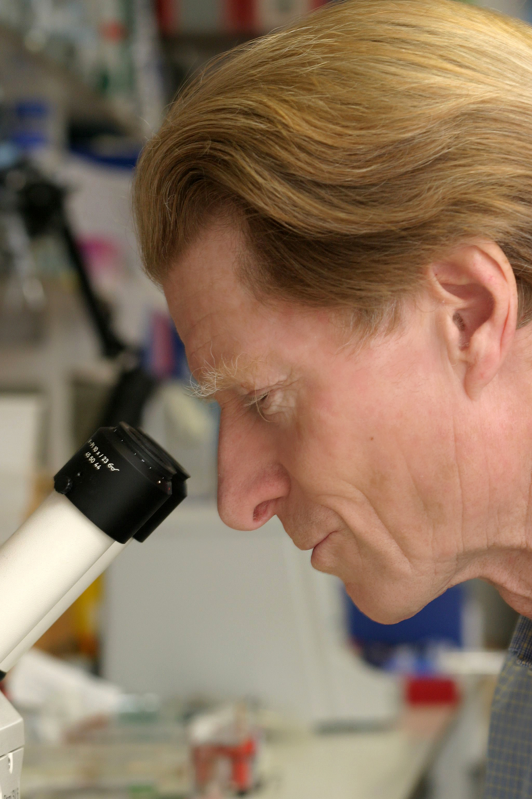

Sir John Gurdon used to believe, even specialised cells, retain full genetic potential of original organism.
He proposed those mature cells can be reprogrammed back to early, capable of developing into any cell type. This idea was revolutionary, and it changed view that cell specialisation was irreversible. His work demonstrated cellular identity is flexible, laying the foundation for advancements in cloning and regenerative medicine
Research Team
Sir John Gurdon maintained an independent research staff. Sir John Gurdon spearheaded research groups during his illustrious tenure in developmental biology, most notably at the University of Cambridge, where he established groundbreaking developments in the discipline.
In his capacity as principal investigator, Gurdon would have supervised a diverse group of researchers, comprising lab technicians, postdoctoral fellows, and doctoral students, all of whom were engaged in collaborative efforts pertaining to genetics and developmental biology. His laboratory leadership centred on comprehending the processes of cellular and organismal development, which ultimately resulted in his revolutionary contributions to the field of nuclear transfer.
The research teams that were guided by Gurdon would have been instrumental in carrying out experiments, analysing data, and disseminating scientific discoveries that made significant contributions to the field's body of knowledge. The lab's collaborative atmosphere would have facilitated scientific discourse and the interchange of concepts, both of which are critical for fostering innovation in research.
Particularly the discovery that mature cells can be reprogrammed to become pluripotent, his contributions continue to shape contemporary stem cell and regenerative medicine research. In recognition of the significance of his contributions, Gurdon's research has garnered numerous honours, including the 2012 Nobel Prize in Physiology or Medicine.

Research contributions
The research conducted by Sir John Gurdon has been seminal in the field of developmental biology for decades. An outline of his principal research contributions spanning from his early years to the present is provided below, encompassing an assessment of the influence and scientific import of his endeavours. Kindly be informed that while it is not possible to furnish exhaustive statistical data for every research endeavour in this reply, I will emphasise the pivotal findings along with their biological significance.
Early Cloning and Research (1960s):
1. Nuclear Transplantation in Xenopus (African clawed frog):
It was demonstrated that a specialised tadpole cell's nucleus could germinate into an enucleated egg and produce an entire new frog, indicating that the DNA in a mature cell retains all the information required to construct an entire organism.
The results of this experiment provided support for the notion that cell specialisation does not modify the genome, thus challenging the notion that cell differentiation is irreversible.
2. The expansion of nuclear transplantation methodologies
Analysis of gene regulation in the process of cell differentiation
Demonstrated the feasibility of nuclear reprogramming, even in completely differentiated cells.
Proficiency in the regulation of gene expression patterns throughout the process of development.
Offered valuable insights into the capacity of cellular genetic material to revert to totipotency or pluripotency and the potential for cellular plasticity.
Research and Reprogramming of Stem Cells (2000s to the present):
3. IPS (Induced Pluripotent Stem) cell research and associated technologies
- Investigating the cellular reprogramming mechanisms
Made a significant contribution to the domain of regenerative medicine through the demonstration that it is possible to induce mature cells to differentiate into stem-like cells carrying out a variety of cell types.
I had a significant impact on the evolution of disease models and therapeutic approaches. Induced pluripotent stem (iPS) cells offer potential for personalised medicine, drug discovery, and tissue regeneration through the provision of patient-specific cells capable of repairing impaired organs or tissues.
Awards and Legacies:
The cloning of a frog from a somatic cell, which established the foundation for mammalian cloning and the inception of stem cell research, is widely regarded as the most prominent project.
Collaborated with Shinya Yamanaka to be awarded the Nobel Prize in Physiology or Medicine in 2012 for their groundbreaking discovery that it is possible to reprogram mature cells to acquire pluripotent characteristics.
Ongoing Research
Ongoing research in the areas of nuclear reprogramming, stem cells, and the epigenetic regulation of gene expression are just a few of the areas in which Sir John Gurdon's contributions to developmental biology continue to have an impact.
A succession of discoveries in the research of Sir John Gurdon have fundamentally altered our comprehension of cell development and the capacity for cellular manipulation. His contribution to the evolution of the medical field has been instrumental in introducing novel opportunities. The ramifications of his research endeavours are extensive, having sparked advancements in biotechnology and therapeutic development while also introducing novel approaches to the study and treatment of human ailments.